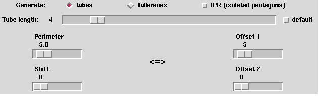

Up : Main
Prev : Generation programs
Next : HCgen
CaGe V0.3
Tubetype
Tubetype is a generation program which generates tubes or fullerenes
that can be split into two tubes. Such fullerenes are called tube--type
fullerenes. Like fullerenes, tubes consist of only pentagons
(exactly 6 pentagons) and hexagons.
However, only inner vertices are adjacent to three other vertices.
Tubes have an outer cycle where the vertices are alternately 2- and 3--valent,
with two exceptions:
There is one place on the outer cycle where two successive vertices are
2--valent and one place where two successive vertices are 3--valent. There
are two different ways to measure the distance between these places (the
following description is not precise, it gives only a clue):

Perimeter and shift: The perimeter is the length of the outer cycle.
It is measured in hexagon units. The shift is the number of 3--valent vertices
between the two places.
Offsets: The length of the outer cycle is given implicitly by giving
two offsets which denote the number of 3--valent vertices between the two
places. Two values are necessary because there are two paths on the
cycle which connect the two places.
Basic options:
By the radiobuttons named "tubes" and "fullerenes"
you determine what kind of objects to be generated. If the "IPR"--checkbutton
is switched on, then only objects with isolated pentagons are generated.
When a tube is generated, it can easily be extended to a tube with more
vertices by adding hexagons to the outer cycle. One complete ring
consisting of hexagons must be added. In this case the resulting outer cycle
after adding the ring looks the same as before. So each tube has a number of
hexagon rings called the tube length. The tube length can be
chosen by the "Tube length"--slider. If the "default"--checkbutton is
switched on, then the default tube length will be taken which depends on the
perimeter and shift. For fullerenes, the tube length means the number of
inner hexagon rings.
The "Perimeter", "Shift", "Offset 1" and "Offset 2"--sliders are used
to choose the related parameters as described above. You should use either
"Perimeter" and "Shift", or "Offset 1" and "Offset 2", depending on the
kind of imagination you prefer. There are several interactions between the
sliders. Note that not all values for "Offset 1" can be translated to
"Perimeter" values since then the limit for "Perimeter" would have to be
raised.
Output options: See section
fullgen
.